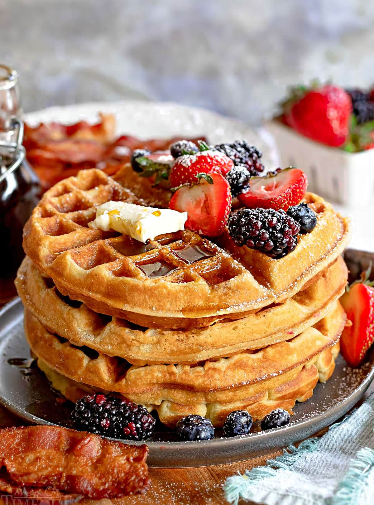

Fresh Waffles

These handmade waffles, will make everyone come back for seconds!
Ingredients (5 Serving Size)
- 2 cups all-purpose flour
- 1 teaspoon salt
- 4 teaspoons baking soda
- 2 tablespoons white sugar
- 2 eggs
- 1 1/2 cups warm milk
- 1/3 cup butter, melted
- 1 teaspoon vanilla extract
- 1 cup of berries (Optional)
- 1/2 pint ice cream (Optional)
Directions
- In a large bowl, mix together flour, salt, baking powder and sugar; set aside. Preheat waffle iron to desired temperature.
- In a separate bowl, beat the eggs. Stir in the milk, butter and vanilla. Pour the milk mixture into the flour mixture; beat until blended.
- Ladle the batter into a preheated waffle iron. Cook the waffles until golden and crisp. Serve immediately.